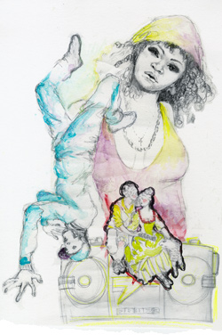

 image: Carlota Santamaria“No chance for bloomers and wigs to outnumber tracksuits - we were on our own.”
Alley cat as I am, I always try and cut through the atmospheric back streets rather than walk up Shoreditch High Street on my way to Brick Lane. I can’t remember when I first discovered Arnold Circus, but since I did, it has become something of a ritual to circle this dreamy little round park with the octagonal band stand sitting like a jewel in its centre, and some rather handsome old council buildings surrounding it.[1]
The month of April was beautiful in London last year, balmy with golden evenings and apple trees in premature bloom. I was inspired to throw an outdoor picnic for my birthday with the theme of naughty shepherds and shepherdesses, and what better setting for such an event than this picturesque little band stand?
Invitations were sent out, and an eyebrow-raising amount was spent on delicacies and fine wines. My best friend Amanda came early to mine so that we could transform into an Arcadian sheep-herding couple. Powdered wigs, painted beauty spots, bloomers and staffs adorned with silk ribbons - we looked like an 18th century porcelain couple come to life!
We pranced down Dalston lane to the local cab office. ‘Spur your horses sir, and take us to Arnold Circus!’ we commanded the frightened taxi driver.
We were the first to arrive, and promptly started to lay out the scrumptious repast over a checked linen cloth. It looked amazing, like a painting by Boucher.
Suddenly, the spell was broken by some aggressive hip-hop music, and as we looked up, two young lads were approaching us, using their mobiles like pocket-sized boom boxes.[2] A quick look around and yep, there were tracksuit-clad figures coming from every direction, closing in on us.
It was obvious that we had chosen for our picnic spot the very place were all the male youths from the council estates gathered at 7pm every night to plan drug deals or discuss highland dance and world politics or whatever it is that they tend to do.
I could not help but smile when I saw their looks of disbelief as they discovered us. They came to a halt, forming a circle around us.
‘What the ****’?
Their normal hangout was transformed into a pastoral idyll, and inhabited by two white-powdered creatures in bloomers.
‘Are you ghosts?’ was the first reaction. I think I could detect some genuine fear in his voice.
‘Or freemasons?’ suggested one of his little friends.
My mobile beeped, as to confirm that we were indeed earthly mortals. I had several texts, all saying the same thing: problems on the tube, everyone was coming late. No moral support to be expected from fellow shepherds and garden nymphs, no chance for bloomers and wigs to outnumber tracksuits - we were on our own.
I swallowed and looked at Amanda. She seemed to be set on just blanking out any disturbing element, and was chewing on her cucumber sandwich as if the future of England depended on it. I grabbed the bottle of champagne.
‘Oh well, Arnold Circus is for everyone. How selfish of me to claim it for my birthday! Whoever touches my shepherd staff will be a dead juvenile delinquent though…’
referenced works
- Arnold Circus forms the centre of the Boundary Estate, a historic council housing project in near-East London, built in 1900 as the world’s first council housing development. The buildings are indeed handsome, but the makers of government-provided accomodation did not follow this aesthetic trend through, eventually settling on a more utilitarian theme that will be familiar to anyone who has watched any modern British film that isn’t about a dithering posh man bumbling his way into the affections of a film star/singer/token American with enormous mouth. ↩
- This delightful recent trend has encouraged a full 340 of London’s 8 million-plus residents to sign a petition asking that London’s already beleagered bus drivers be asked to tell the youths who make their every working minute a merry-go-round of joy not to play tinny R&B hits on their mobile phones. In a city where people are stabbed to death for politely asking that fellow passengers refrain from throwing chips at their girlfriends, this is clearly a workable and realistic policy. ↩
location information
- Name: Arnold Circus
- Address: Arnold Circus, London, E2
- Time of story: Evening
- Latitude: 51.52639454963022
- Longitude: -0.07493019104003906
- Map: Google Maps
020 “There’s not going to be enough pavement to go around.”
019 “Then our eyes flicked back together again, and a tear was gathering on her cheek.”
018 “One of them shot me 'die hippy' neon rays from under his star-shaped glasses.”
017 “I often wonder how many of those photographs I have popped up on.”
016 “'Thank you, London!' cries possibly-famous scruffy lead singer.”
015 “Around us, drivers beep their horns and pedestrians trample on my clean jumpers and skirts.”
014 “No chance for bloomers and wigs to outnumber tracksuits - we were on our own.”
013 “Then the unthinkable had happened. We met and became ‘friends’.”
012 “Nothing is forever, to live is to suffer, please give generously.”
011 “The taste is salt water, and the rubbery texture never-ending.”
010 “I pressed the side of my hand to my forehead, pointlessly.”
009 “His voice falters, but refuses to capsize.”
008 “A hollow understanding of togetherness wrapped around everyone.”
007 “In amongst the railway arches and Victorian masonry, the dead spaces remain intact.”
006 “A big scruffy bloke began watching.”
005 “Why did I feel so warm and fuzzy inside?”
004 “I smiled and nodded in an informed and knowledgeable way.”
003 “Bobo-the-hobo, swag, mighty mezz. It's all there right in front.”
002 “To my shame, I realise I am crying.”
001 “Her skirt snaps in the wind like a flag.”

Write for Us!
We’re looking for short narratives describing pivotal moments of elation, confusion, absurdity, love or grief — or anything in between — inseparably tied to a specific place in London.
London:
Or receive updates by email
Addresses only used for the occasional hitotoki mailing. Will not be traded for kebabs or Special Brew.
A list of all available RSS feeds is on the about page.
commentary
disapointment in the backing away of the Alley Cat
there should of been a brutal war…
Pony Ahoy!!!